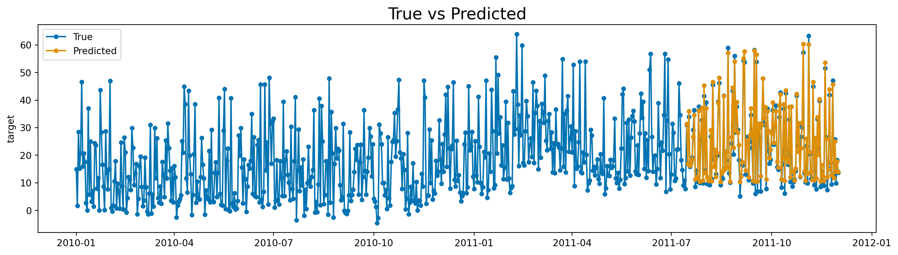

This section explains how to create custom exogenous effects in Prophetverse. We will start by explaining what is an exogenous effect, and then we will show a practical example where we create an effect that uses a squared function to model the relationship between the exogenous variable and the target variable.
The Effects API
The exogenous effect API allows you to create custom exogenous components for the Prophetverse model. This is useful when we want to model specific patterns or relationships between the exogenous variables and the target variable. For example, enforcing a positive effect of a variable on the mean, or modeling a non-linear relationship.
If you have read the theory section, by effect we mean each function \(f_i\). You can implement those custom functions by subclassing the BaseEffect class, and then use them in the Prophetverse model. Some effects are already implemented in the library, and you can find them in the prophetverse.effects module.
When creating a model instance, effects can be specified through exogenous_effects parameter of the Prophetverse model. This parameter is a list of tuples of three values: the name, the effect object, and a regex to filter columns related to that effect. The regex is what defines \(x_i\) in the previous section. The prophetverse.utils.regex module provides some useful functions to create regex patterns for common use cases, include starts_with, ends_with, contains, and no_input_columns.
Consider the example below, where we create a model with a linear seasonality effect and a custom effect that uses the feature channel1_investment as input and transforms it with a hill curve, which is a common curve for capturing diminishing returns.
/opt/hostedtoolcache/Python/3.11.13/x64/lib/python3.11/site-packages/tqdm/auto.py:21: TqdmWarning: IProgress not found. Please update jupyter and ipywidgets. See https://ipywidgets.readthedocs.io/en/stable/user_install.html
from .autonotebook import tqdm as notebook_tqdm
Creating such models in Prophetverse is like creating buildings from lego blocks. You define how you model should work, and then you can leverage all the interface to carry out the forecasting and inference tasks.
Creating a Custom Effect
The effects can be any object that implements the BaseEffect interface, and you can create your own effects by subclassing BaseEffect and implementing _fit, _transform and _predict methods.
_fit (optional): This method is called during fit() of the forecasting and should be used to initialize any necessary parameters or data structures. It receives the exogenous variables dataframe X, the series y, and the scale factor scale that was used to scale the timeseries.
_transform (optional): This method receives the exogenous variables dataframe, and should return an object containing the data needed for the effect. This object will be passed to the predict method as data. By default the columns of the dataframe that match the regex pattern are selected, and the result is converted to a jnp.ndarray.
_predict (mandatory): This method receives the output of _transform and all previously computed effects. It should return the effect values as a jnp.ndarray
In many cases, the _fit and _transform steps are not needed to be implemented, since the default behaviour may be the desired one. In the example below, we implement a really simple SquaredEffect class, which leverages the default behaviour of the BaseEffect class.
Squared Effect Class
The SquaredEffect class receives two hyperparameters: the prior distribution for the scale parameter, and the prior distribution for the offset parameter. If no prior is provided, it uses a Gamma(1, 1) for the scale and a Normal(0, 1) for the offset. Note that here we already see an interesting feature of Prophetverse: by adopting a Gamma Prior, we force the effect to be positive. Any other prior with positive support would work as well. If no such constraint is needed, we can use a Normal(0, 1) prior or any other distribution with support in the real line.
The _fit and _transform methods are not implemented, and the default behaviour is preserved (the columns of the dataframe that match the regex pattern are selected, and the result is converted to a jnp.ndarray with key “data”).
Practical Example
The example below is, of course, a toy example, but I hope it illustrates the process of creating a custom effect. We load a synthetic dataset with a squared relationship between the exogenous variable and the target variable, and then we fit a model with the SquaredEffect. The true relationship is 2 * (x - 5) ** 2, and we will see if the model is able to recover it.
Prophetverse(exogenous_effects=[('exog_effect',
SquaredEffect(offset_prior=<numpyro.distributions.continuous.Normal object at 0x7f7ad409a850 with batch shape () and event shape ()>,
scale_prior=<numpyro.distributions.continuous.Normal object at 0x7f7ad41ac610 with batch shape () and event shape ()>),
'^exogenous$')],
inference_engine=MAPInferenceEngine(),
trend=PiecewiseLinearTrend(changepoint_interval=100,
changepoint_prior_scale=0.1,
changepoint_range=-100))
Please rerun this cell to show the HTML repr or trust the notebook.
Prophetverse(exogenous_effects=[('exog_effect',
SquaredEffect(offset_prior=<numpyro.distributions.continuous.Normal object at 0x7f7ad409a850 with batch shape () and event shape ()>,
scale_prior=<numpyro.distributions.continuous.Normal object at 0x7f7ad41ac610 with batch shape () and event shape ()>),
'^exogenous$')],
inference_engine=MAPInferenceEngine(),
trend=PiecewiseLinearTrend(changepoint_interval=100,
changepoint_prior_scale=0.1,
changepoint_range=-100))
SquaredEffect(offset_prior=<numpyro.distributions.continuous.Normal object at 0x7f7ad409a850 with batch shape () and event shape ()>,
scale_prior=<numpyro.distributions.continuous.Normal object at 0x7f7ad41ac610 with batch shape () and event shape ()>)
MAPInferenceEngine()
To fit and plot, we use always the same interface, from sktime library.
plot_series(y, y_pred, labels=["True", "Predicted"], title="True vs Predicted")plt.show()

Recovering the Predicted Effect and Components
This library adds extra methods to the sktime interface, such as predict_components, which behaves similarly to predict, but returns the components of the forecast as components of the output.
The name of the effect in the output dataframe is equal to the one we have passed as first item in the tuple when creating the model. In this case, the name is “exog_effect”.